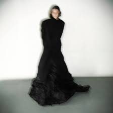

Медкид — это современный исполнитель, который активно развивает музыкальный стиль, основанный на мелодичном хип-хопе и эмбиенте. Его музыка отличается глубокими текстами и атмосферной обработкой звука, создавая особую атмосферу, как в студийных релизах, так и в живых выступлениях.

музыкант, работающий в жанре, сочетающем мрачные элементы хип-хопа и трэпа. Его творчество часто фокусируется на темных, философских темах, таких как одиночество, борьба с внутренними демонами и мрак современного мира. Он использует уникальные биты и атмосферные звуковые текстуры, создавая запоминающийся, погружающий в себе стиль..
один из ярких представителей современного хип-хопа, известный своими экспериментальными подходами к музыке и текстам. Его творчество включает в себя элементы нео-соул, трэпа и альтернативного рэпа. Он активно экспериментирует с жанрами, создавая смесь необычных ритмов и мелодий, а также затрагивает в своих песнях социальные и личные темы..